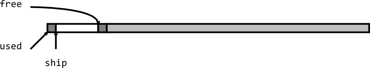
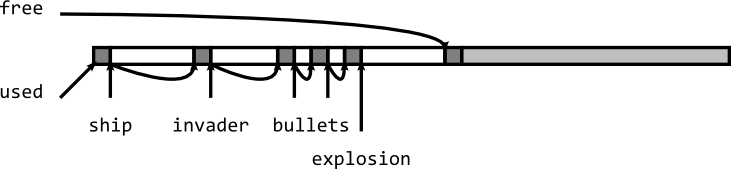
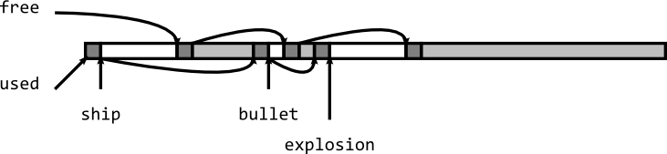
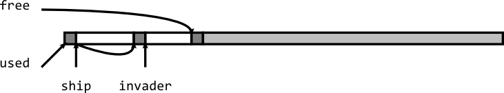
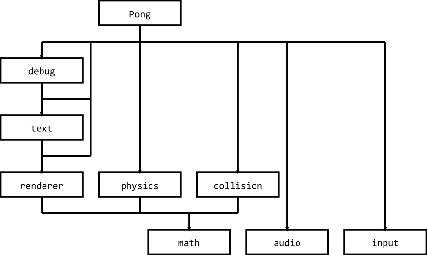

Ship * ship = (Ship*)malloc(sizeof(Ship)); // ... free(ship);
Ship * ship = new Ship; // ... delete ship;
auto_ptr<Ship> ship = new Ship; // ... // ship is deleted automatically when variable goes out of scope
var ship: Ship = new Ship; // ... // ship is deleted automatically some time after variable goes out of scope

MODULE NAME: math PURPOSE: Provides 2D coordinate types and mathematical operations on those types. TYPES: Coord: An int "x" and "y" coordinate. Box: A "topLeft" Coord and a "size" Coord. FUNCTIONS: function Move(box: Box, vector: Coord): Box Returns a Box that represents the given "box" moved by the amount in "vector". function Inside(pos: Coord, box: Box): boolean Returns true if the point "pos" is inside the given "box" otherwise it returns false. function MakeCenteredBox(centre: Coord, size: Coord): Box Returns a Box value representing a box centered on position "centre" with the given "size" dimensions. function Centre(box: Box): Coord Returns a Coord value representing the centre of the given "box". function ReflectHorizontal(vector: Coord): Coord Returns a Coord matching "vector" but reflected in X. function ReflectVertical(vector: Coord): Coord Returns a Coord matching "vector" but reflected in Y. function Clamp(value: int, min: int, max: int): int Returns "value" if between "min" and "max". Otherwise if the "value" is above "max" it returns "max". Otherwise it returns "min". function ClampBox(box: Box, bounds: Box): Box Returns the given "box" if it is with the given "bounds". Otherwise it returns a Box adjusted to be within the given "bounds". If the size of the given "box" is greater than the size of the given "bounds" in either width or height, then the return value is undefined.
| task | estimated | actual | |||||||||
|---|---|---|---|---|---|---|---|---|---|---|---|
| name | id | depends | resource | start date | start time | end date | end time | start date | start time | end date | end time |
| design math module | 1 | paul | 30/03/12 | 9:00 | 30/03/12 | 13:00 | |||||
| design audio module | 2 | paul | 30/03/12 | 14:00 | 30/03/12 | 18:00 | |||||
| design input module | 3 | paul | 02/04/12 | 9:00 | 02/04/12 | 13:00 | |||||
| design renderer module | 4 | 1 | paul | 02/04/12 | 14:00 | 02/04/12 | 18:00 | ||||
| design physics module | 5 | 1 | paul | 03/04/12 | 9:00 | 03/04/12 | 13:00 | ||||
| design collision module | 6 | 1 | paul | 03/04/12 | 14:00 | 03/04/12 | 18:00 | ||||
| design text module | 7 | 4 | paul | 04/04/12 | 9:00 | 04/04/12 | 13:00 | ||||
| design debug module | 8 | 7 | paul | 04/04/12 | 14:00 | 04/04/12 | 18:00 | ||||
| task | estimated | actual | |||||||||
|---|---|---|---|---|---|---|---|---|---|---|---|
| name | id | depends | resource | start date | start time | end date | end time | start date | start time | end date | end time |
| design math module | 1 | paul | 30/03/12 | 9:00 | 30/03/12 | 13:00 | |||||
| design audio module | 2 | arkin | 30/03/12 | 9:00 | 30/03/12 | 13:00 | |||||
| design input module | 3 | liam | 30/03/12 | 9:00 | 30/03/12 | 13:00 | |||||
| design renderer module | 4 | 1 | paul | 30/03/12 | 14:00 | 30/03/12 | 18:00 | ||||
| design physics module | 5 | 1 | arkin | 30/03/12 | 14:00 | 30/03/12 | 18:00 | ||||
| design collision module | 6 | 1 | liam | 30/03/12 | 14:00 | 30/03/12 | 18:00 | ||||
| design text module | 7 | 4 | paul | 02/04/12 | 9:00 | 02/04/12 | 13:00 | ||||
| design debug module | 8 | 7 | paul | 02/04/12 | 14:00 | 02/04/12 | 18:00 | ||||